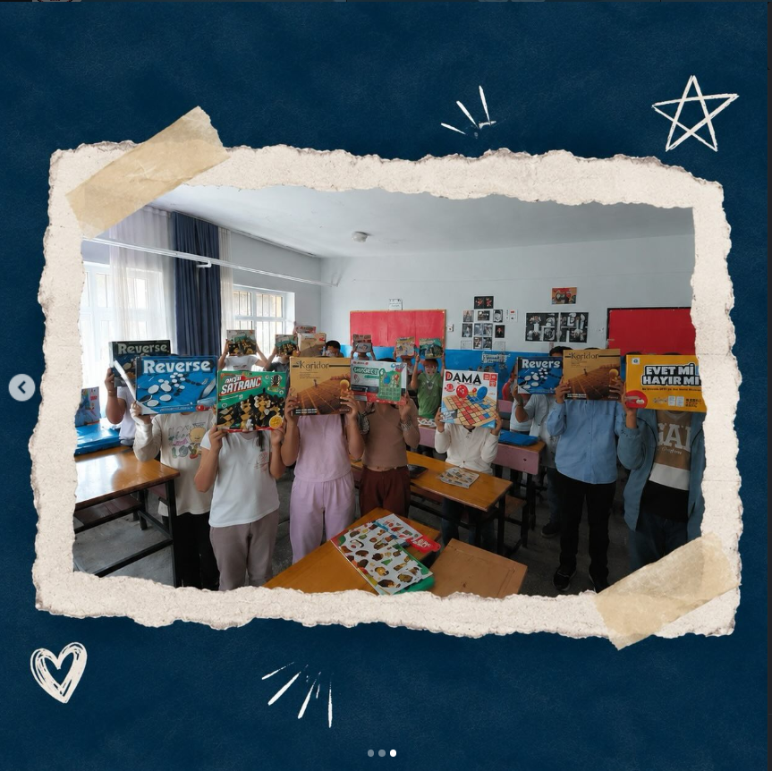
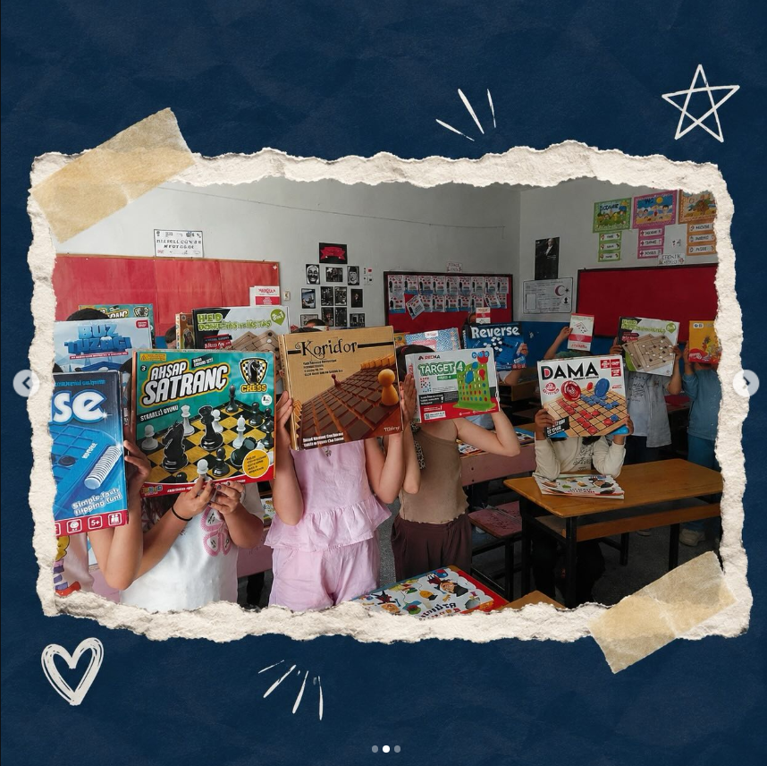

An open impact dashboard tracking Hypium’s STEM outreach and social-impact work with verifiable data.
This page documents Hypium’s STEM outreach, training activities and community work in one place. Counters are updated only from verified activity records.
Verified participant total
Completed activities
Total active training time
Institutions reached directly
Students volunteering in activities
Explore our verified social impact work by location, date and students reached. Markers indicate approximate city / district centers; no private or sensitive location data is published.
Define the target audience and intended STEM outcome.
Deliver the workshop, presentation, mentoring or social-impact activity.
Record participation, duration and reach.
Support the record with photos, documents and an activity summary.
Use feedback to improve the next activity.
We carried out a social impact activity with 10 students using painting and creative activities focused on making together, communication and social participation.


We prepared end-of-year gifts for 40 fourth-grade graduates to celebrate their graduation and make the end of the school year more meaningful and memorable.

